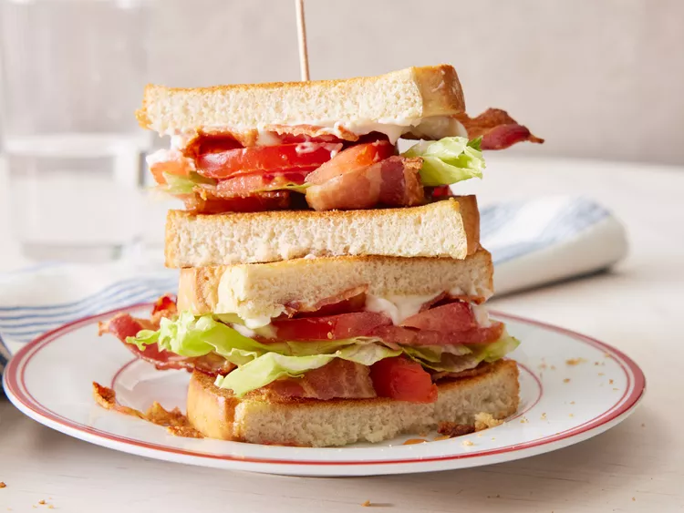

BLT

Ne laissez pas passer le mois d'août sans préparer un BLT (ou 10). Ce sandwich classique n'a jamais meilleur goût que lorsque les tomates sont en pleine saison. Cette version est décrite comme « rien d'extraordinaire, juste délicieuse » et le « meilleur sandwich à emporter ». Bien sûr, nous avons aussi ces versions « raffinées » pour vous si vous préférez.
Ingrédients
- 4 tranches de bacon
- 2 feuilles de laitue
- 2 tranches de tomate
- 2 tranches de pain grillées
- 1 cuillère à soupe de mayonnaise
Etapes
- Rassemblez tous les ingrédients.
- Faites cuire le bacon dans une grande poêle profonde à feu moyen-vif jusqu'à ce qu'il soit uniformément doré, environ 10 minutes. Égouttez le bacon sur une assiette recouverte de papier absorbant.
- Disposer le bacon cuit, la laitue et les tranches de tomates sur une tranche de pain. Étaler la mayonnaise sur l'autre tranche de pain.
- Prêt à faire un sandwich.